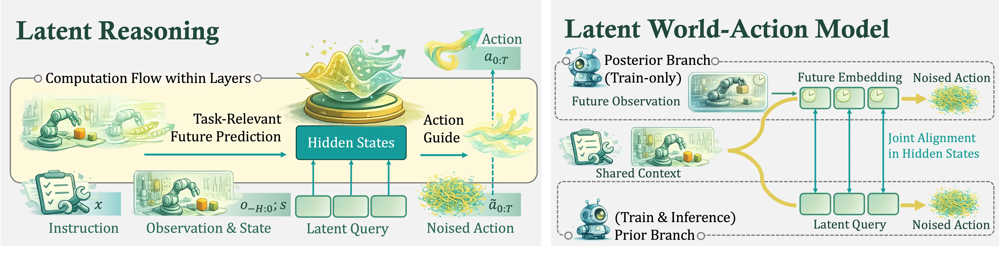
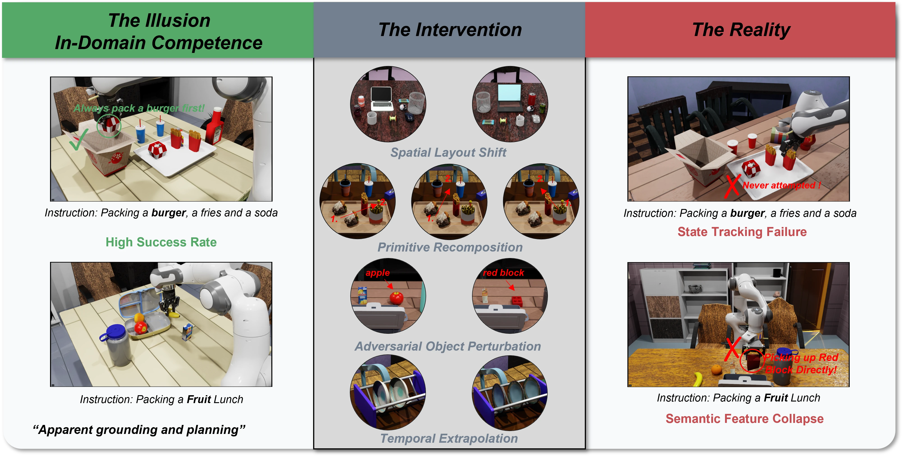
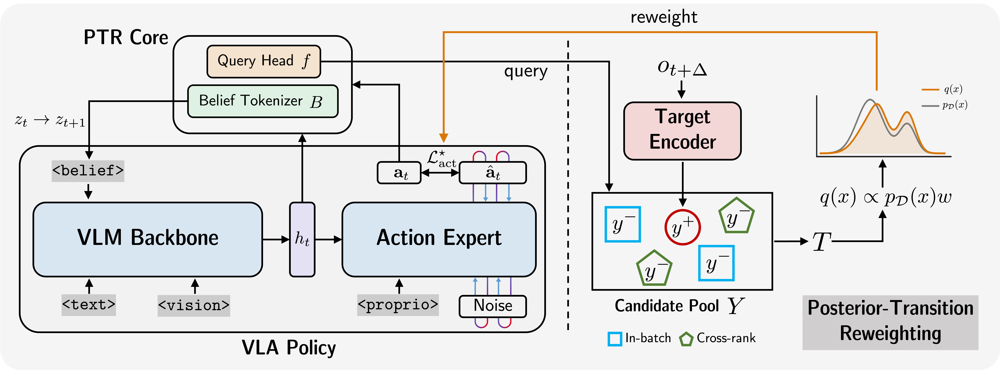
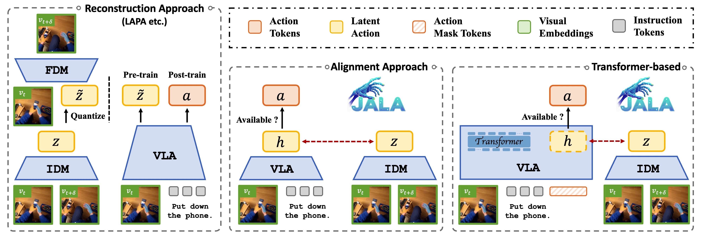
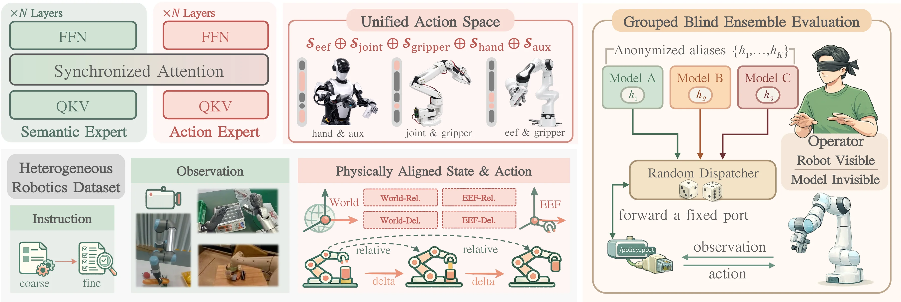
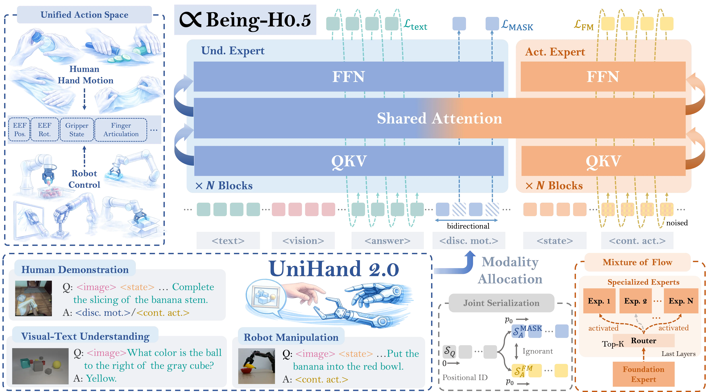

Undergraduate Research Project, BeingBeyond
Advisor: Prof. Zongqing Lu
I am an undergraduate student at Peking University, interested in building generalist physical intelligence through embodied agents, large-scale robot learning, and vision-language-action models.
This site collects my research updates, publications, course notes, and a few less formal things I am learning along the way.
My current research focuses on embodied AI, especially vision-language-action models and robot policies that can transfer across tasks, environments, and embodiments.
I am working with Prof. Zongqing Lu at BeingBeyond. I am broadly excited by scalable data, action representations, and evaluation methods for real-world robot learning.
Updated May 2026
Sorted by arXiv release date. * Equal contribution, † Corresponding author.






Advisor: Prof. Zongqing Lu
Undergraduate Student, School of Electronics Engineering and Computer Science
I maintain course notes and reading notes as a lightweight knowledge base. Open course notes.